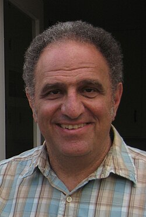

Robert Tibshirani | |
|---|---|
 | |
| Born | July 10, 1956 |
| Alma mater | University of Waterloo University of Toronto Stanford University |
| Known for | Lasso method |
| Spouse | Cheryl Denise Tibshirani |
| Scientific career | |
| Fields | Statistics |
| Institutions | Stanford University |
| Bradley Efron[1] | |
Doctoral students | |
| Website | tibshirani |
Robert Tibshirani FRS FRSC (born July 10, 1956) is a professor in the Departments of Statistics and Biomedical Data Science at Stanford University. He was a professor at the University of Toronto from 1985 to 1998. In his work, he develops statistical tools for the analysis of complex datasets, most recently in genomics and proteomics.
His most well-known contributions are the Lasso method, which proposed the use of L1 penalization in regression and related problems, and Significance Analysis of Microarrays.
Tibshirani was born on 10 July 1956 in Niagara Falls, Ontario, Canada. He received his B. Math. in statistics and computer science from the University of Waterloo in 1979 and a Master's degree in Statistics from the University of Toronto in 1980. Tibshirani joined the doctoral program at Stanford University in 1981 and received his Ph.D. in 1984 under the supervision of Bradley Efron. His dissertation was entitled "Local likelihood estimation".[1]
Tibshirani received the COPSS Presidents' Award in 1996. Given jointly by the world's leading statistical societies, the award recognizes outstanding contributions to statistics by a statistician under the age of 40. He is a fellow of the Institute of Mathematical Statistics and the American Statistical Association. He won an E.W.R. Steacie Memorial Fellowship from the Natural Sciences and Engineering Research Council of Canada in 1997. He was elected a Fellow of the Royal Society of Canada in 2001 and a member of the National Academy of Sciences in 2012.[3]
Tibshirani was made the 2012 Statistical Society of Canada's Gold Medalist at their yearly meeting in Guelph, Ontario for "exceptional contributions to methodology and theory for the analysis of complex data sets, smoothing and regression methodology, statistical learning, and classification, and application areas that include public health, genomics, and proteomics".[4] He gave his Gold Medal Address at the 2013 meeting in Edmonton. He was elected to the Royal Society in 2019. Tibshirani was named as the 2021 recipient of the ISI Founders of Statistics Prize for his 1996 paper Regression Shrinkage and Selection via the Lasso.
His son, Ryan Tibshirani,[5] with whom he occasionally publishes scientific papers, is a professor at UC Berkeley in the Department of Statistics.
Tibshirani is a prolific author of scientific works on various topics in applied statistics, including statistical learning, data mining, statistical computing, and bioinformatics. He along with his collaborators has authored about 250 scientific articles. Many of Tibshirani's scientific articles were coauthored by his longtime collaborator, Trevor Hastie. Tibshirani is one of the most ISI Highly Cited Authors in Mathematics by the ISI Web of Knowledge.[6] He has coauthored the following books:
{kind=link}